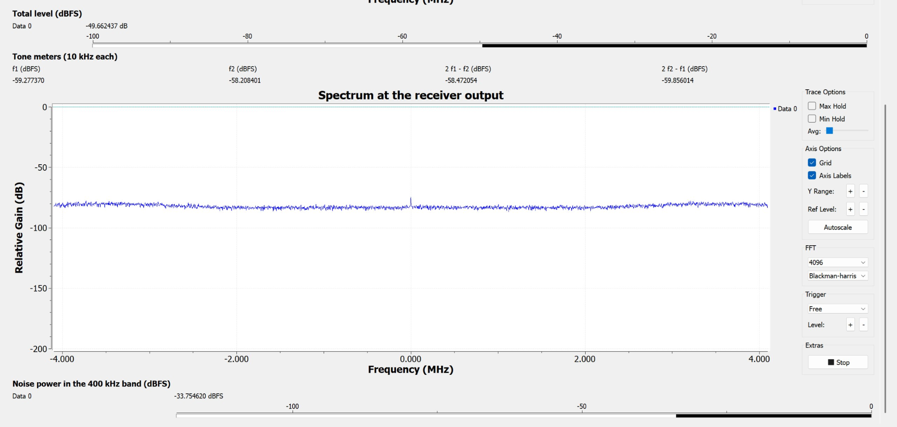
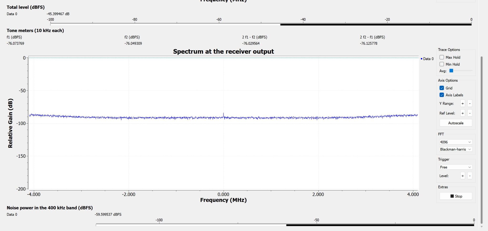
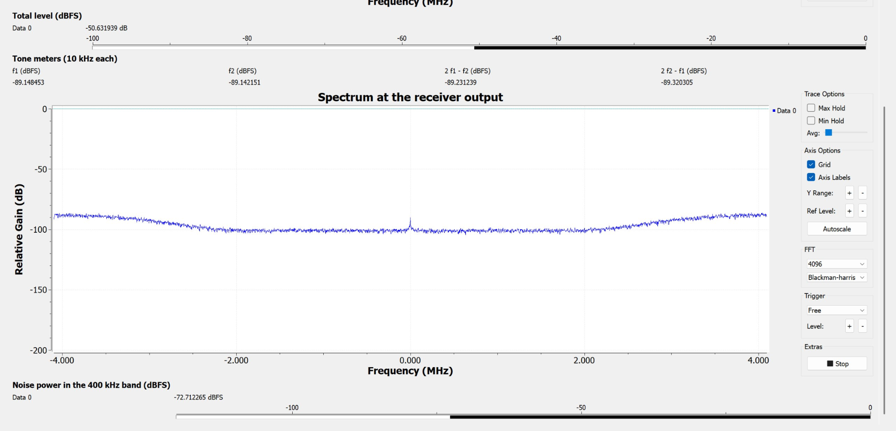
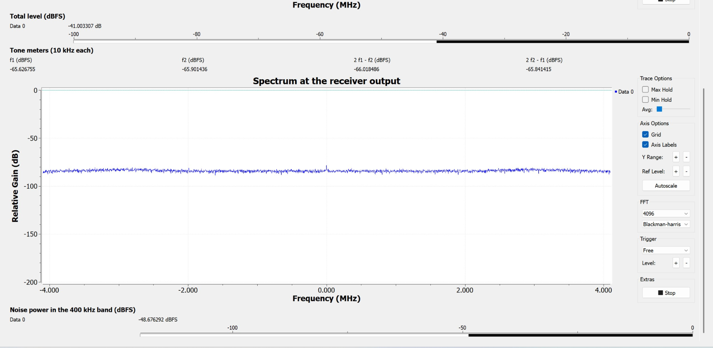

روش اندازهگیری
فرستنده از طریق تضعیفگر ثابت به ورودی گیرنده متصل شد. در فلوگراف lab02_combined، حالتهای Off (zeros) و Gaussian noise بهترتیب برای ثبت و به کار رفتند. هر دو کمیت از نوارسنج توان نویز در باند با مرکز در باند پایه خوانده میشوند. فرکانس مرکزی بر اساس پیشفرض فلوگراف درج شده است.
رابطهٔ محاسبه و تضعیف فرستنده
با برحسب dBFS، توان نسبی است. اختلاف دو خواندن و عدد نویز بهصورت زیر محاسبه میشوند.
مدل اسمی دستورکار، با احتساب تضعیفگر مسیر، را میدهد. در نتیجه معادل و معادل از ENR اسمی در ورودی گیرنده است.
| شکل | بهرهٔ RX (dB) | حالت منبع | (dB) | (dBFS) | Total level (dBFS) |
|---|---|---|---|---|---|
| ۱ | خاموش | ||||
| ۲ | گوسی | ||||
| ۳ | گوسی | ||||
| ۴ | خاموش | ||||
| ۵ | گوسی | ||||
| ۶ | خاموش | ||||
| ۷ | گوسی |
ستاره در جدول ۱ یعنی تضعیف فرستنده برای آن تصویر مشخص نشده است. عدد خواندن لحظهای پنل پایین تصویر است. سه خواندن جداگانهٔ هر حالت برای محاسبهٔ میانگین و پراکندگی در مستندات موجود ثبت نشدهاند. برای شکل ۷، نوسان زیاد خواندن هنگام آزمایش گزارش شد.
با دسترسی به خواندنهای تکراری، توانهای خطی هر حالت میانگینگیری میشوند و سپس محاسبه میشود.
محاسبه با یادداشت تیم
برای شکلهای ۱ و ۲، سطوح تقریبی و با کف نمایش طیف سازگارند. از این دو مقدار و به دست میآید. با ENR اسمی ، جایگذاری این نسبت در رابطه، میدهد. این برآورد به تأیید نسبت با خواندنهای پایدار همان باند وابسته است.
جدول عدد نویز و بررسی اعتبار
برای نمونه، خواندنهای شکلهای ۱ و ۲ نسبت میدهند. جدول ۲ سه زوج روشن و خاموش را در قالب دستورکار ثبت میکند. ترتیب هر سهتایی (ENR, , ) و واحد همهٔ مقادیر دسیبل است.
| فرکانس مرکزی | |||
|---|---|---|---|
| فرکانس دوم | خواندنهای این فرکانس در دسترس نیست | ||
| فرکانس سوم | خواندنهای این فرکانس در دسترس نیست | ||
مقادیر ستارهدار جدول ۲ با محاسبه شدهاند. اگر تضعیف در باقی مانده باشد، ENR اسمی و مقادیر در بهرههای و بهترتیب و میشوند.
هر سه مقدار حاصل از نوارسنج از بازهٔ تا دستورکار بیروناند. در مدل گیرنده با ، کران برقرار است. این کران در تضعیفهای ۶۰ و ۵۷ بهترتیب معادل و برای است. مقادیر منفی جدول ۲ حاصل جایگذاری مستقیم دادهها و نشانهٔ ناسازگاری با مدل اسمیاند. عدد نویز معتبر از این خواندنها تعیین نمیشود. سطح کل هر چهار ثبت گوسی زیر بود. نزدیکترین خواندن به حد دستورکار، در شکل ۵ است.
آزمون خطیبودن با گام
در بهرهٔ ، تضعیف فرستنده از ۶۰ به کاهش یافت. با استفاده از شکل ۱ بهعنوان خط پایهٔ مشترک، سهم نویز خاموش را در مقیاس خطی کم میکنیم.
افزایش ثبتشده از مقدار مورد انتظار بیشتر است. در شکل ۳، نوارسنج باند بالاتر از سطح کل است. دو نوارسنج در فلوگراف هموارسازی مستقل دارند و برای مقایسهٔ کمی باید هر دو خواندن در وضعیت پایدار ثبت شوند. تیم هنگام آزمایش نشانهای از اشباع مشاهده نکرد. صحت کمی گام با فریمهای موجود نامعین است.
پاسخ پرسش بخش دوم
چرا باید در یک بازهٔ میانی بماند و اثر خطای در خواندن چقدر است؟
وقتی به ۱ نزدیک است، جملهٔ کوچک میشود و خطای خواندن در عدد نویز تقویت میشود. برای بزرگ، بالا بردن توان نویز تزریقی میتواند گیرنده یا مبدل را وارد تراکم کند و رابطهٔ خطی را برهم بزند. سازگاری یک نسبت بزرگ با ENR اسمی از کران بالا سنجیده میشود.
برای کوچکترین نسبت جدول ۲، یعنی ، خطای در یکی از خواندنها بهطور صوری حدود خطا در میدهد. در یادداشت تیم، این اثر حدود است.
تصاویر بهرهٔ



تصاویر بهرهٔ



تصاویر بهرهٔ




ثبت اجرای مراحل
نویز گوسی فرستنده از مسیر تضعیفگر به گیرنده رسید. ENR اسمی برای تضعیفهای و محاسبه شد.
توان نویز در وضعیتهای خاموش و روشن خوانده شد. جدول قرائتها اعداد باقیمانده از هفت ثبت را نشان میدهد. روش تجمیع سه قرائت هر حالت، میانگینگیری توان خطی پیش از گرفتن نسبت است.
معیار بازهٔ تا برای و حد سطح کل بررسی شد. یادداشت تیم تغییر حدود در کف نمایش طیف را ثبت کرده است و سطح کل چهار تصویر گوسی زیر حد دستورکار است.
برای آزمون پاسخ خطی، تضعیف کم شد. پس از کسر توان زمینه در مقیاس خطی، رشد خواندهشده از تصاویر به دست آمد و محدودیت این مقایسه در متن توضیح داده شد.
برای سه بهره، جدول Y-Factor از زوجهای ثبتشده تشکیل شد. تنظیم مرجع فرکانس در گزارش است و خانههای بدون مستند عددی با وضعیت داده مشخصاند.